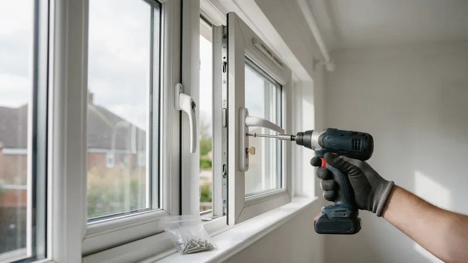

What has actually gone wrong
A double glazed window is two panes held apart by a spacer bar and sealed round the edge. When that seal fails, damp air gets into the gap, and every cold morning it condenses on the inside of the glass. That is the bloom you cannot wipe off. The glass is fine. The frame is usually fine. The seal has gone.
It is worth knowing because this is the single most oversold job in the trade. A fogged window is often used as the way in to a conversation about replacing every window in the house, and most of the time the right answer is a new sealed unit in the frame that is already there.
What is inside one
When a new unit is not the answer
If the frame has gone, if the hinges and handles are worn out too, or if the window was already on its last legs, then putting new glass in it is money spent on a lost cause. The same goes for a frame that has dropped so far the sash no longer closes square, because the new unit will be under strain from the day it goes in. We will tell you which of those you are looking at when we see it.
 Generated photo
Generated photoGenerated for this demo. Not a photograph of a real job.
 Generated photo
Generated photoA new unit carried in on lifters. Generated for this demo.
On the day
How this one usually goes.
- We check the frame before the glassHinges, handle, gaskets and whether the sash still closes square. There is no point glazing a frame that is finished.
- Measure the unitOut of the frame, properly, with the thickness and any coating or pattern noted. Sealed units are made to the measured size.
- It gets madeA few days usually, and a patterned or shaped unit can take longer. You get a date rather than a vague promise.
- Swap it overBeads out, old unit out, new one in on fresh packers so it sits square and the weight goes where it should, beads back on.
- Checked and cleared upOpened and closed, the glass cleaned, and the old unit taken away. Broken glass does not go in your bin.
A sample running order for this demo. Yours depends on the house.
Questions
Asked about this job.
Can you replace just the misted glass?
Yes, when the frame, hinges and handles are sound, and that is most of the time. The old unit comes out of the same frame and a new one goes in. It takes under an hour per window once the glass has been made.
Why can I not just wipe it off?
Because the bloom is on the inside faces of the two panes, inside a sealed gap, where nothing can reach. Once the seal has failed, the only fix is a new unit.
Will the new one mist up as well one day?
Every sealed unit has a working life, so eventually, yes. What shortens it is standing water sat on the glazing bead, poor packing when it was fitted, or a frame that has dropped and is twisting the unit. All three are worth putting right while the glass is out.
Does it have to match the rest?
It should. Thickness, any pattern, any coating and the colour of the spacer bar round the edge all get noted at the measure, because a unit that does not match looks obvious once it is in.
General trade knowledge written for this demo, not advice on your house.
Our work
Sample jobs like this.
Generated photoCloudy unit swapped outRuncorn SampleGenerated photoSealed unit carried inGreat Sankey Sample
Generated photoHandle and hinges, not a new windowLymm Sample Generated photoBay put back as it wasLymm Sample
Generated photoBay put back as it wasLymm SampleMade up samples with generated pictures. Tap one for the detail.
Also
The other things we do.
Replacement windows
Whole houses and single openings. Measured properly, made to those sizes, and fitted without taking the plaster off with them.
More →Composite and front doors
A solid door, a frame that fits the opening, and a lock that works with one hand full of shopping. Colour, glass and furniture your pick.
More →Bifold and patio doors
Bifolds that stack back and leave the opening clear, sliders that pass behind each other, and french doors where the opening is narrower.
More →Sash window repair and replacement
Cords, weights, beads and draughts put right on the originals, or a new sash window made to the same sightlines when the timber has gone.
More →Window and door repairs
Handles, hinges, locks, gaskets and the mechanism down the edge of a door. The parts wear out long before the frame does.
More →Shall we come and measure?
Tell us what you are looking at and your postcode and we will book a survey. If the glass has gone or a door will not lock, use the urgent line instead.